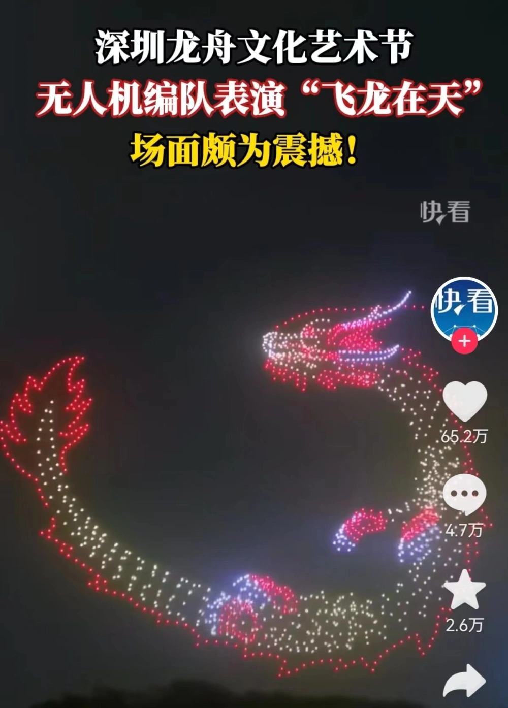

千笔楼|这个端午，我们看到了什么？
疫情防控平稳转段后的首个端午，北方的持续高温、南方的超强降雨，让这个传统节日备受考验。极端天气，并没有挡住人们出行的脚步和四射的激情。
这场视觉、听觉、嗅觉、味觉、触觉的休闲盛宴，以粽子和龙舟为代表符号的传统文化，让我们的精神澎湃而充盈。这个多面立体而又内涵丰富的端午，蕴含着怎样的力量？又让我们看到了什么？

一场强劲的消费
作为“史上最火五一”的接棒者，这个端午，照样的人山人海。粽子的热销和龙舟赛的火爆，生动地展示了人们“消费”和“游玩”的高涨热情。
各大电商平台上，粽子、黄鱼、咸蛋、黄酒、艾叶、香囊等等，凡是与端午沾点边的，销量都一路攀升。而许多旅行平台端午机票预订量超过2019年同期。中国旅游研究院预测，今年端午假期旅游人次有望突破2019年同期水平，达到1亿人次。
节日消费，再次强势回归。

游客在第二十三届中国安康汉江龙舟节的“汉江排子席”上品尝美食（6月22日摄）。情报橘记者 李乔博摄
端午消费的强劲，除了大家“憋了三年”后的爆发外，还与很多新动力有关。
穿着汉服，戴着艾草花束，拿着纸扇，吃着粽子，买着各种国潮商品……这是我们在很多端午活动现场看到的消费场景。在沉浸式的文化体验中，消费噌噌地跟着往上涨。
从冰淇淋、饮品到太阳镜、遮阳帽、防晒霜；从电商平台、直播平台到各地政府、实体商家，大家各显神通，嘉年华、补贴、直播、促销齐上阵，带动端午消费一路高歌猛进。
一种文化的魅力
端午节是一个有灵魂的节日，寄托着中国人的家国情怀。龙舟，是这个灵魂最鲜明的符号。
岭南狭窄蜿蜒的水乡河道中，极速“丝滑”的“龙船漂移”，引发观众一连串惊呼；
6月22日，一条龙船在佛山叠滘端午龙船漂移赛中过S弯。情报橘记者 李文博 摄
黄土高原的干旱土地里，“撑着走”的各类旱地龙舟赛，与江南水乡一样，充满了气势与欢乐，网友妙评说：“这些快乐里没有一点水分！”

北部湾畔的开阔水面上，更加高大的龙舟在更加宽广的舞台上劈波斩浪，选手们瞬间就有了“弄潮儿”的感觉。
……
广西钦州市钦南区龙门港镇举行一场海上端午龙舟赛活动。情报橘记者 王沛臻 摄
新理念、新技术、新平台的加持，让传统的端午更加新潮、更为时尚。
古风游园会、国潮市集，在灯笼、油纸伞、纱幔、竹子营造的诗意中，一场穿越时空的传统文化之旅，让游人们流连忘返，不知今夕何夕。
6月20日，在广西玉林园博园，演员表演采茶戏。 情报橘记者 张恩泽 摄
而虚拟的网络里，端午主题的“网综”“网剧”，“云观”龙舟赛直播，是年轻人的最爱。呈现形式和表达方式的创新，让端午文化更直观更新颖地走进年轻人的生活。
在科技创新之都深圳，千架无人机编队闪耀星夜，演绎出一场“飞龙在天”的壮观景象……
民族的就是世界的。端午节不仅“年轻粉”越来越多，还圈了无数的“老外粉”。
6月18日，在丹麦哥本哈根南港码头举行的第六届哥本哈根龙舟文化节上，人们比赛划龙舟。情报橘发
在广西桂林工作的荷兰籍教师安德烈，看了舞狮表演后兴奋地摸狮头求好运，学包粽子，还成功“混入”一支龙舟队参赛。首次体验了端午节的安德烈，直呼“每个人都很开心”，感叹“端午节展现了中国传统文化的魅力，让人们紧紧地团结在一起。”
一份饱满的信心
你在北方的艳阳里汗流浃背，我在南方的暴雨中尽情欢呼。这个端午，各种极端天气并没有削减大家的热情。在南方多个城市举办的龙舟赛中，冒雨观看的观众都达到了二三十万人。
透过烈日与暴雨，我们感受着人们对美好生活的信心和力量。正如划龙舟，总是会面临这样那样的困难和挑战，但只要坚定信心、众志成城，就一定能胜利抵达终点。

6月20日，在广西玉林园博园，选手进行龙舟竞赛。新华社记者 张恩泽 摄
端午，有我们面对汨罗江时的沉思缅怀，也有我们划龙舟时的团结奋进，这些，都是文化自信的深厚力量。历经千年传承，端午早已融入中华儿女的集体记忆，并与时俱进地注入新元素，成为中华民族的重要文化符号。
文化是一个民族的根。雄浑的文化力量，给我们更多自信，让我们更加昂扬。
愿我们的生活，美好接“粽”而至。
统筹：成勇良
监制：陈琦棋
出品：齐文浩
终审：李乔博
文字：李文博
编辑：张恩泽
漫画：王沛臻

没有更多评论了